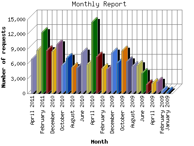

The Monthly Report identifies activity for each month in the report
time frame. Remember that each page hit can result in several server requests
as the images for each page are loaded.
Note: Depending on the
report time frame, the first and last months may not represent a complete
month's worth of data, resulting in lower hits.

| Month | Number of requests | Number of page requests | |
|---|---|---|---|
| 1. | January 2009 | 377 | 6 |
| 2. | February 2009 | 543 | 24 |
| 3. | March 2009 | 2,406 | 8 |
| 4. | April 2009 | 2,039 | 11 |
| 5. | May 2009 | 1,865 | 11 |
| 6. | June 2009 | 4,105 | 9 |
| 7. | July 2009 | 5,769 | 11 |
| 8. | August 2009 | 5,483 | 9 |
| 9. | September 2009 | 6,558 | 23 |
| 10. | October 2009 | 8,692 | 167 |
| 11. | November 2009 | 6,266 | 15 |
| 12. | December 2009 | 8,289 | 13 |
| 13. | January 2010 | 4,909 | 10 |
| 14. | February 2010 | 5,085 | 10 |
| 15. | March 2010 | 7,478 | 9 |
| 16. | April 2010 | 14,460 | 11 |
| 17. | May 2010 | 5,920 | 12 |
| 18. | June 2010 | 8,328 | 7 |
| 19. | July 2010 | 5,250 | 9 |
| 20. | August 2010 | 5,287 | 7 |
| 21. | September 2010 | 7,226 | 8 |
| 22. | October 2010 | 5,719 | 8 |
| 23. | November 2010 | 9,954 | 14 |
| 24. | December 2010 | 8,544 | 9 |
| 25. | January 2011 | 8,768 | 82 |
| 26. | February 2011 | 12,397 | 673 |
| 27. | March 2011 | 8,755 | 456 |
| 28. | April 2011 | 6,999 | 289 |
Most active month February 2011 : 673 pages sent. 14,460 requests handled.
Monthly average: 68 pages sent. 6,338 requests handled.
This report was generated on April 23, 2011 21:02.
Report time frame January 4, 2009 02:40 to April 23, 2011 23:20.
| Web statistics report produced by: analog 5.1 / Report Magic 2.21 |